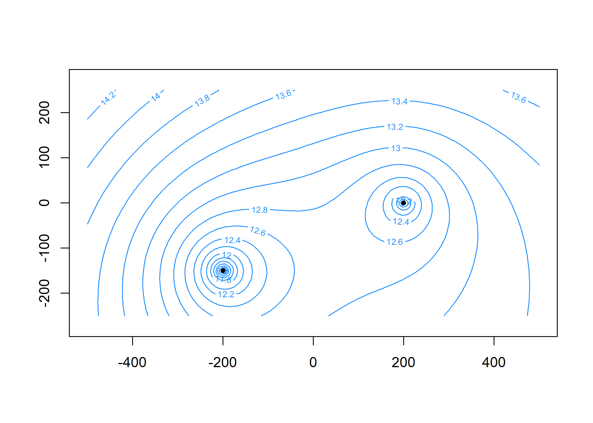
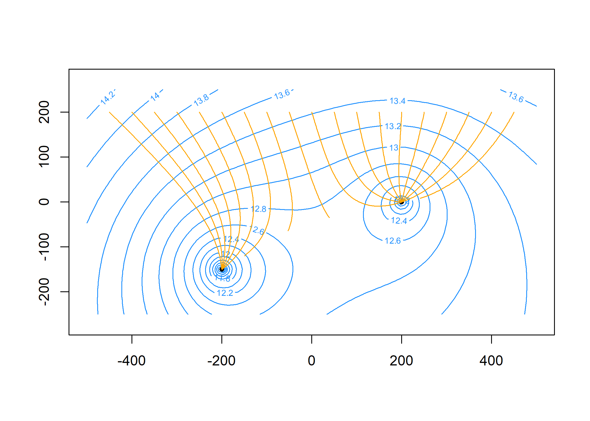

raem is an R package for modeling steady-state, single-layer groundwater flow under the Dupuit-Forchheimer assumption using analytic elements.
Installation
To install the released version:
install.packages("raem")The development version of raem can be installed from GitHub with:
# install.packages("devtools")
devtools::install_github("cneyens/raem")Documentation
The package documentation can be found at https://cneyens.github.io/raem/.
Example
Construct an analytic element model of an aquifer with uniform background flow, two extraction wells and a reference point.
Specify the aquifer parameters and create the elements:
library(raem)
# aquifer parameters ----
k = 10 # hydraulic conductivity, m/d
top = 10 # aquifer top elevation, m
base = 0 # aquifer bottom elevation, m
n = 0.2 # aquifer porosity, -
hr = 15 # head at reference point, m
TR = k * (top - base) # constant transmissivity of background flow, m^2/d
# create elements ----
uf = uniformflow(TR, gradient = 0.001, angle = -45)
rf = constant(xc = -1000, yc = 0, hc = hr)
w1 = well(xw = 200, yw = 0, Q = 250)
w2 = well(xw = -200, yw = -150, Q = 400)Create the model. This automatically solves the system of equations.
m = aem(k = k, top = top, base = base, n = n, uf, rf, w1, w2)Find the head and discharge at two locations: x = -200, y = 200 and x = 100, y = 200. Note that there are no vertical flow components in this model:
discharge(m, c(-200, 100), 200, z = top) # m^2/d
#> Qx Qy Qz
#> [1,] 0.15028815 -0.2923908 0
#> [2,] 0.06041242 -0.3347206 0Plot the head contours and element locations. First, specify the contouring grid:
Now plot:

Compute particle traces starting along y = 200 at 20 intervals per year for 5 years and add to the plot:
paths = tracelines(m,
x0 = seq(-450, 450, 50),
y0 = 200,
z0 = top,
times = seq(0, 5 * 365, 365 / 20))
plot(paths, add = TRUE, col = 'orange')